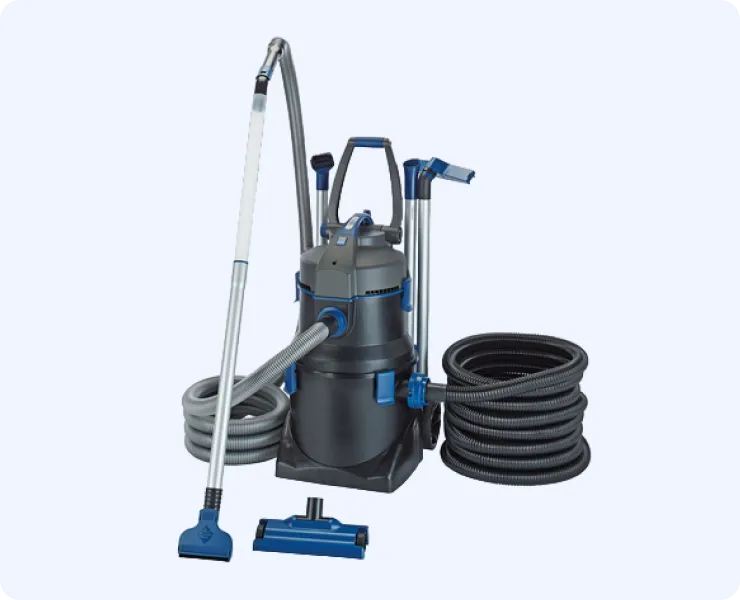

Пылесосы для водоёмов
Пылесос для пруда PONDOVAC-5,1700Вт, всас.шл.5м,гл.всас.2,5м
Цена и наличие
Цена уточняется. Нет в наличии.
Данные на 23.11.2026.
Характеристики
- Бренд
- Oase
- Длина всасывающего шланга
- 5 м
- Длина сливного шланга
- 10 м
- Глубина всасывания
- 2,5 м
- Особенности
- Идут в комплект трубки, шланги, насадки
- Размеры (Д х Ш х В), мм
- 435х395х670
- Номинальное напряжение
- 220-240 В / 50 Гц
- Энергопотребление, Вт
- 1700
- Длина кабеля питания, м
- 7,5
- Вес, кг
- 27
- Глубина всасывания, м
- 2,5
- Производитель
- Oase
- Длина всасывающего шланга, м
- 5.0
- Длина сливного шланга, м
- 10
Описание
PONDOVAC 5 - пылесос для пруда. Может использоваться для очистки садовых прудов, бассейнов и плавательных прудов, а также как моющий пылесос в домохозяйстве.
ПЫЛЕСОС ДЛЯ ПРУДА PONDOVAC 5 Благодаря, встроенному насосу создается беспрерывный вакуум. Таким образом данный «пылесос» не прекращает всасывание в момент опорожнения. Гибкое использование – сточные воды могут быть направлены в любом направлении. Максимальная глубина всасывания 2,5 м. благодаря высокой производительности мотора 1700 Вт. Мотор с оптимизированной геометрией лопасти. Может использоваться для очистки садовых прудов, бассейнов и плавательных прудов, а также как моющий пылесос в домохозяйстве. Легко двигаться благодаря транспортными роликами и регулируемой ручки. Больше дорожный просвет и шины заложены в дизайн колеса. Ручной регулятор для регулировки мощности всасывания Мощность всасывания до 8000 л/ч, в зависимости от заданных условий. Отводной шланг с с-подключением с обеих сторон. В комплект поставки входит: 4 надежные алюминиевые трубки, специальная насадка для удаления водорослей, широкая универсальная насадка, насадка щетка, мешок для сбора мусора, всасывающий шланг длиной 5м, сливной шланг 10 м.